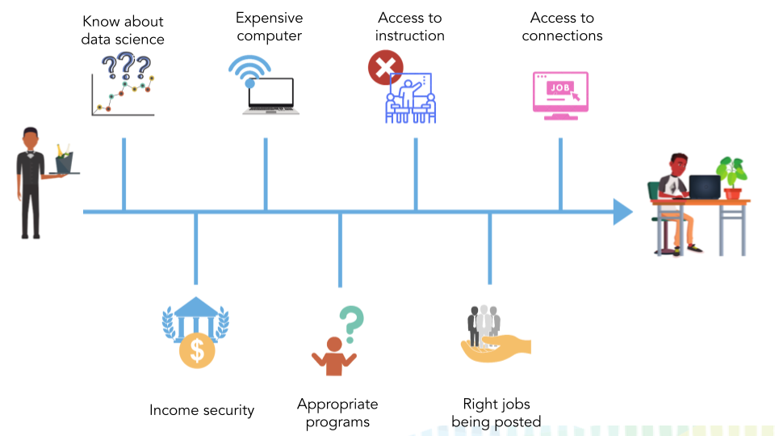
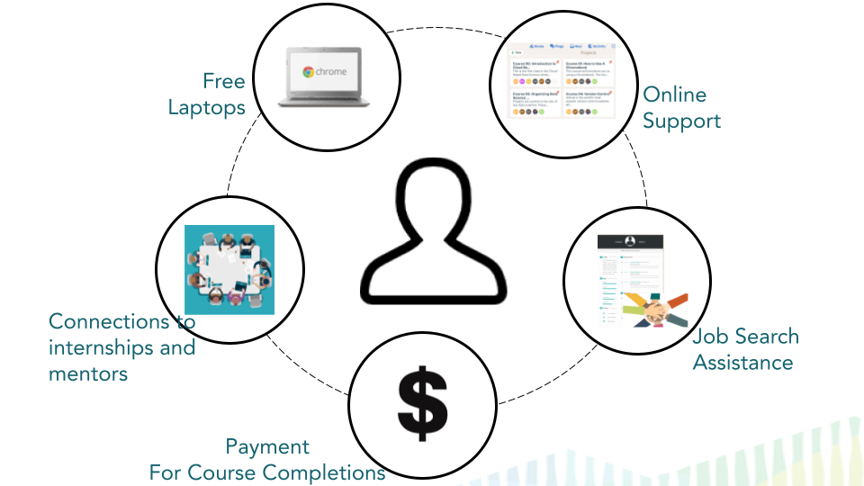

Chapter 1 Background for DataTrail
DataTrail is a no-cost, paid educational initiative for young-adult, high school and GED-graduates. DataTrail aims to equip members of underserved communities with the necessary skills and support required to work in the booming field of data science.
DataTrail began as an initiative through the Johns Hopkins Bloomberg School of Public Health, in partnership with local non-profits in the Baltimore area. The materials, lessons, and strategies that the inaugural DataTrail program has used are described here in hopes that other groups in other cities can start their own DataTrail programs.
In this guide, we will cover how you can start your own DataTrail program.
1.1 Motivation
1.1.1 The bad news:
Data science suffers from a lack of diversity that likely stems from societal racial inequities absorbed by the field. Data science is ovewhelmingly and unfortunately white and male. Meaning the field is not equitable for entry for everyone.
This is a huge problem for two reasons:
- Lack of diversity in data science work can leads to short-sighted and limited work that ultimately can be harmful to larger society:
- How our data encodes systematic racism - Technology review
- Racial bias in a medical algorithm favors white patients over sicker black patients - Washinton Post
- Many Facial-Recognition Systems Are Biased, Says U.S. Study - The New York Times
- As Cameras Track Detroit’s Residents, a Debate Ensues Over Racial Bias - The New York Times
- Facebook’s ad-serving algorithm discriminates by gender and race - MIT Technology Review
- How community members in Ramsey County stopped a big-data plan from flagging students as at-risk - TC Daily Planet
- Income mobility is a public health issue and many individuals who would highly benefit from the career of data science are currently excluded from the benefits of an exciting and lucrative career in data science.
1.2 The barriers
Many industries have huge data science hiring demands but the individuals who could help fill this demand in ways that would bring sorely needed insights to the field are impeded by a number of barriers that can often be dispropotionately difficult barriers for marginalized individuals.
In order for any person to launch their data science career they need:
- Know data science is a career option!
- Have the income security that would allow them to pursue career building education
- Own a quality computer so they can do data science work
- Have connections and the ability to join the appropriate data science education programs
- Have access to data science instruction to learn the skills.
- Find appropriate job postings that fit their career goals
- Access to the connections needs to continue to build their data science career

1.2.1 The good news:
The goal of DataTrail is to try to reduce racial inequities in data science by reducing these barriers for young adults.
Income mobility is aided by education! So what we can do as a part of a DataTrail program is support these young individuals on their journey’s toward a data science career.

To this end, a DataTrail program provides:
- Payment to help with income security for individuals in the program
- A Chromebook laptop and access to Posit Cloud for use for data science work.
- Instruction and support for the data science education
- Social support to help scholars mitigate other barriers to their education: internet access, transportation issues, housing, childcare, etc.
- Internships after completion of the program
- Connections to individuals and programs that can help a DataTrail graduate build their career
In the upcoming chapters, we will discuss all the tips and strategies we have used to set up the Baltimore DataTrail program in hopes that you can use this guide run a DataTrail program.